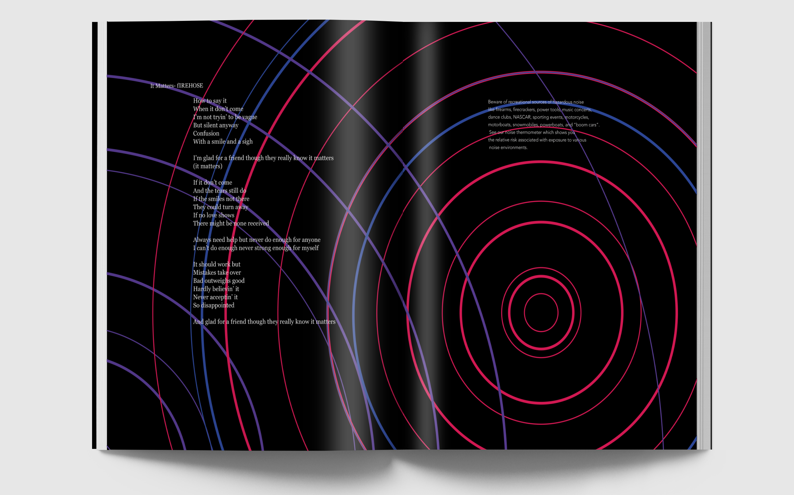
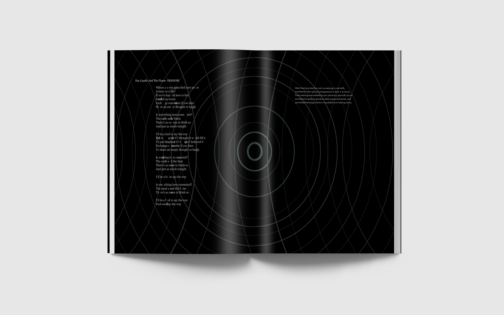
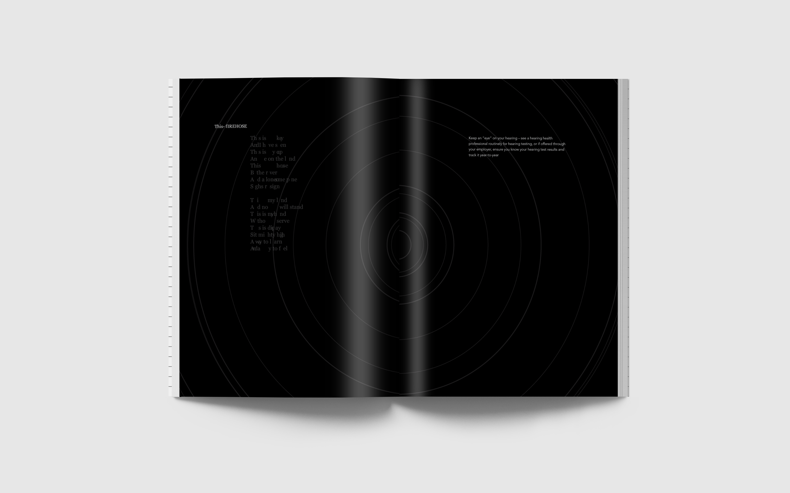
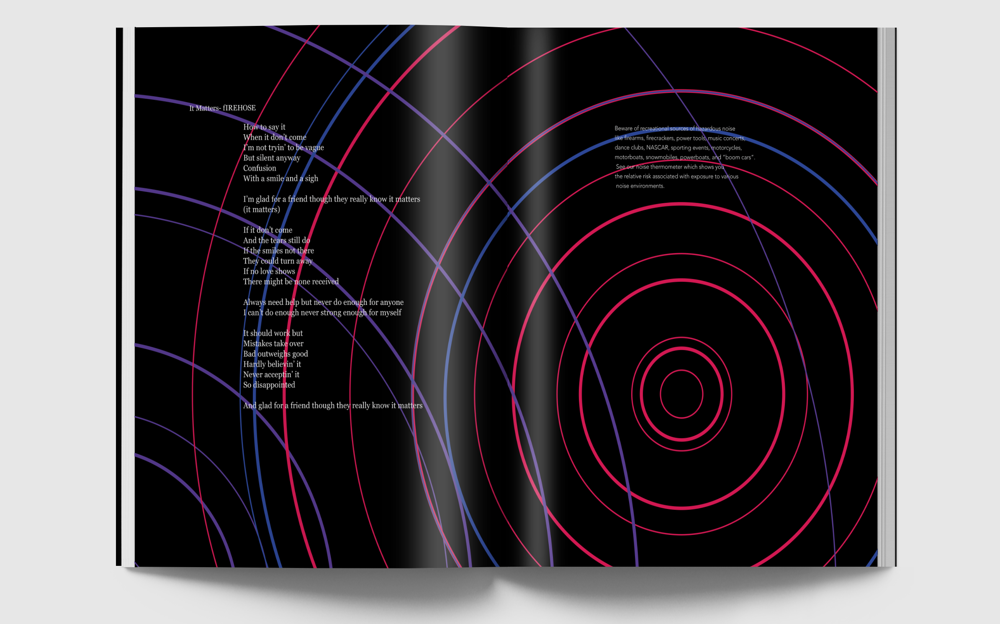
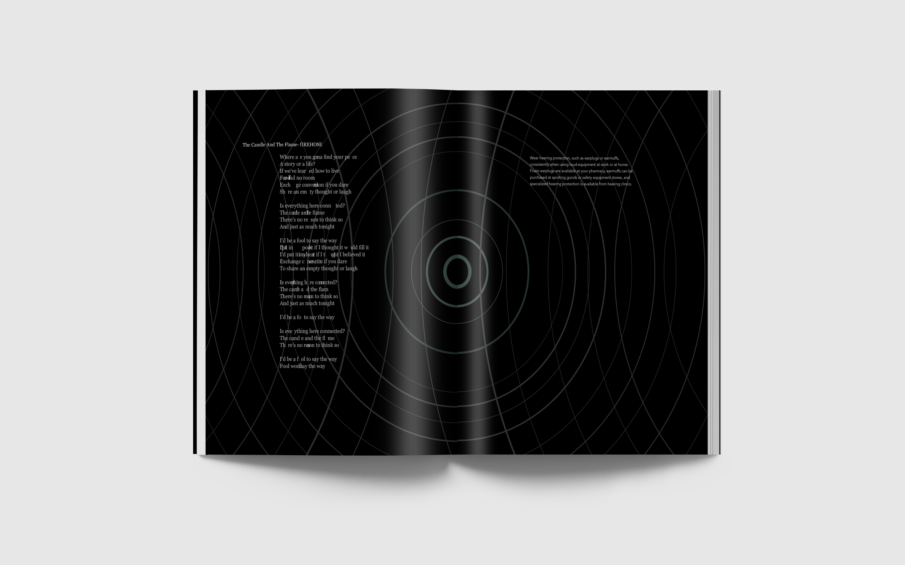
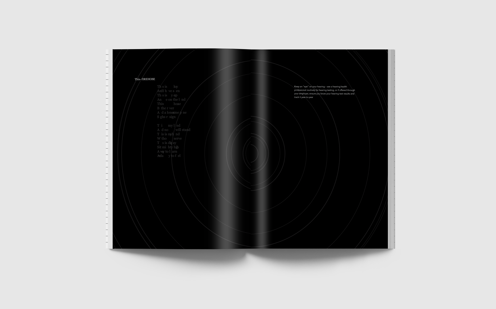
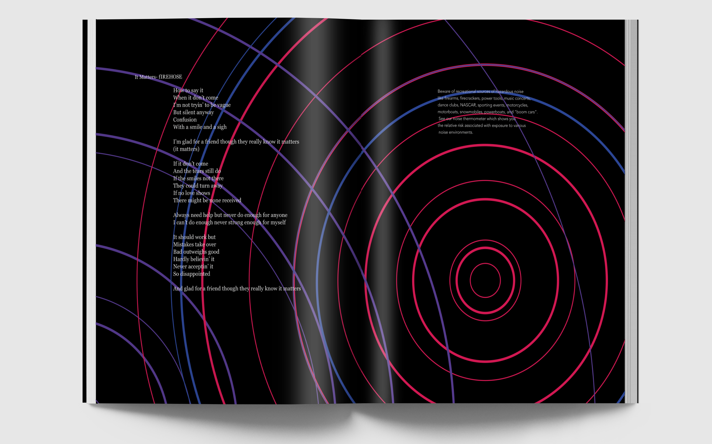
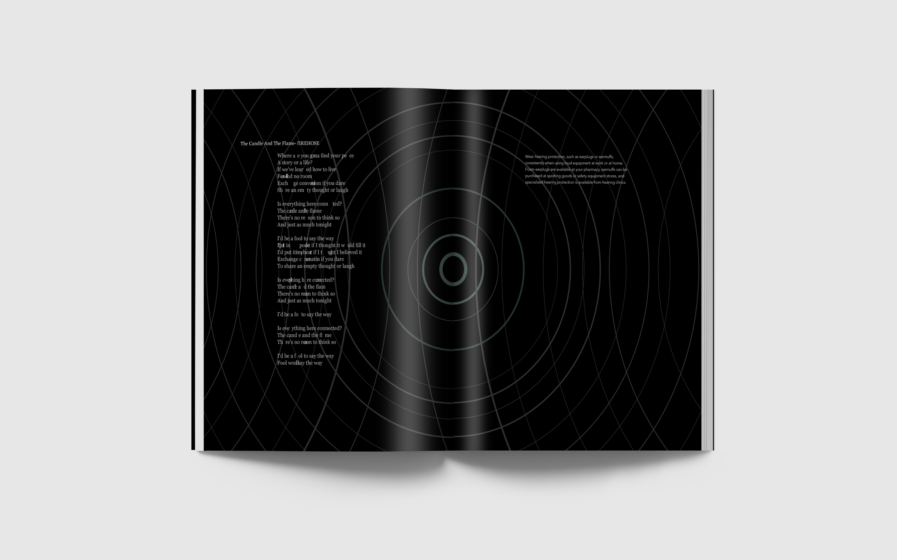
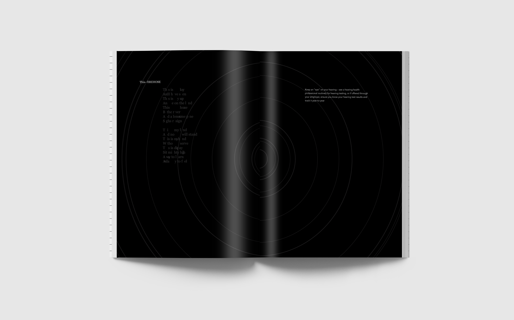
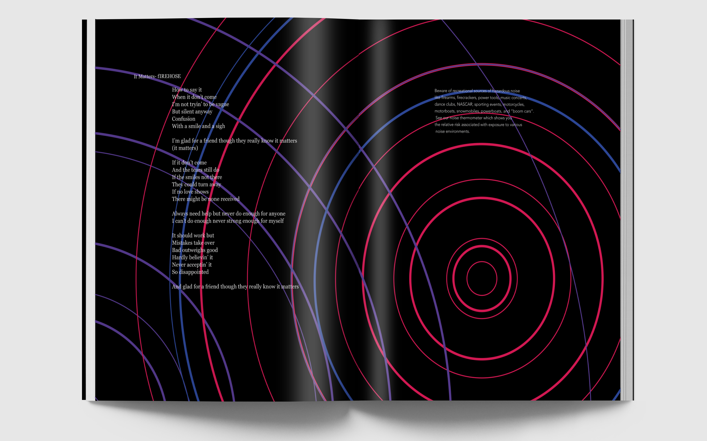
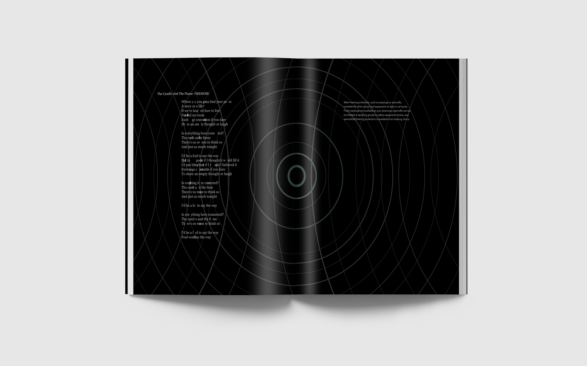
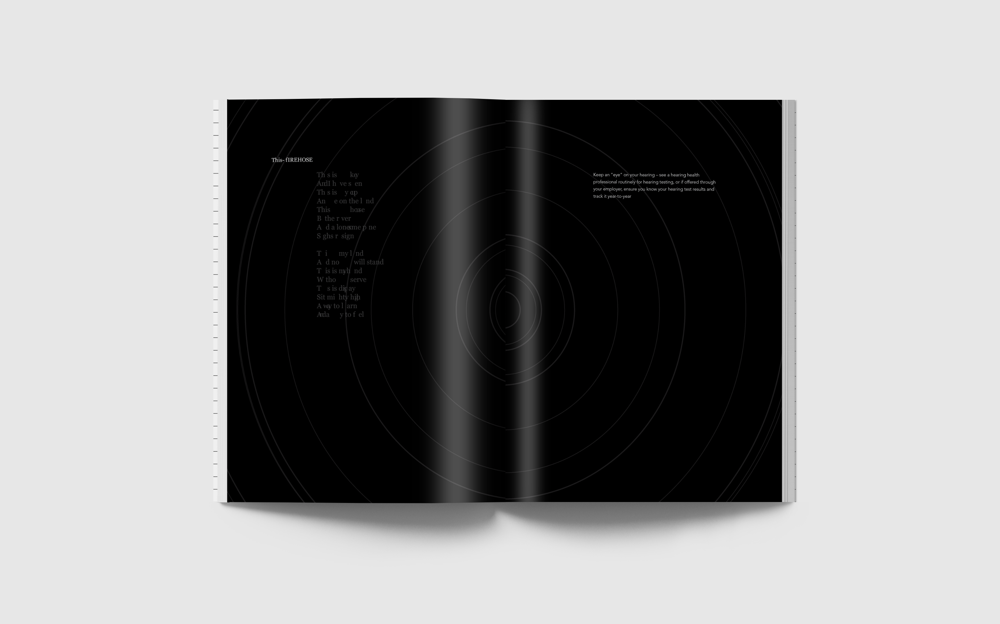
The book project is exactly how it sounds we were tasked with creating a book. The guidelines for the book were we had to take to text and lay them side by side, then using our design we had to express a third voice that is the voice of the designer. For my book i decided to work on the concept of hearing loss. On one side of the spread i put the lyrics from an album and on the other i put health text about the effects the causes and the symptoms of hearing loss. In the background i wanted to express sound and the fullness of it, and as the book goes on show how listening to loud music can eventually do irreparable damage to your ears leaving the music you loved a shell of what it was.